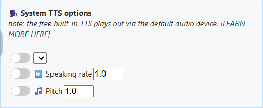
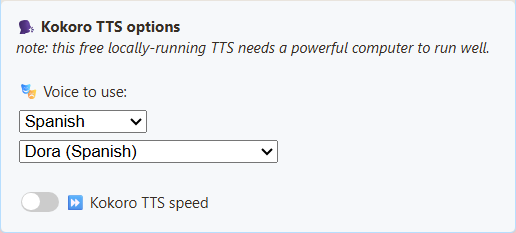
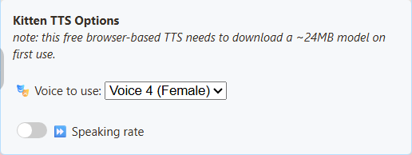
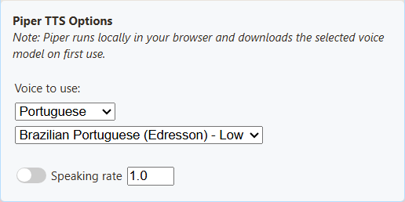
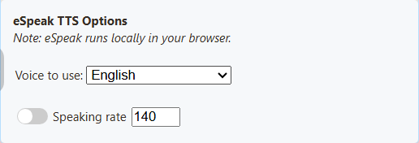
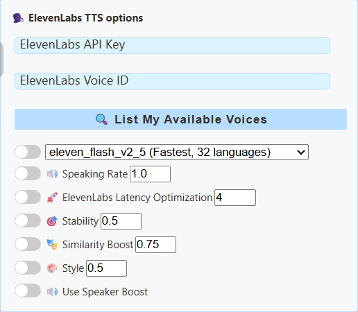
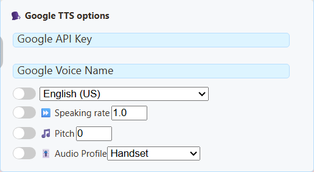
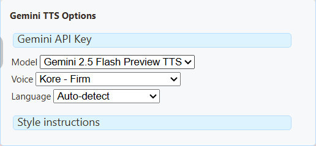
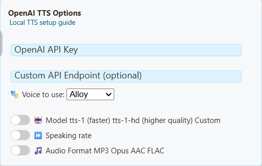

Seadistage see 5 sammuga
Kas vestlus pole veel ühendatud? Alusta siit esiteks.
- Avage SSN-laienduse hüpikaken, või Allikad ja sätted töölauarakenduses.
- Under Peamine vestluse ülekate ja juhtdokk, laiendada Sõnum – tekst kõneks.
- Lülitage sisse Tekst-kõneks sissetulevad sõnumid.

- Kerige valikuni Kõnesünteesi teenusepakkuja. Vali Piper TTS, siis hääl.
- Klõpsake kopeeri link kõrval Peamine vestluse ülekate ja juhtdokk.

Mängige seda OBS-is
- Lisage a Brauseri allikas ja kleepige kopeeritud link.
- Selle omadustes lülitage sisse Heli juhtimine OBS-i kaudu.
- Saatke vestlussõnum. Allika helimõõtur peaks liikuma.
- Tehke lühike testsalvestus ja esitage see.
Kuulake vaba häält
Kõik neli on tasuta ja töötavad teie arvutis. Võrdlemiseks vajutage esitusklahvi.
Kokoro
Bella, USA inglise keel, naine. Kõige loomulikum, kuid protsessoril aeglasem.af_bella
Hispaania ja Portugali näidised
Valige SSN-i häälloendi kohalt keel ja vajutage Test. Piperil on Hispaania, Mehhiko, Brasiilia ja Portugali hääl. Kokorol on kolm hispaania ja kolm Brasiilia portugali häält.
Piper – hispaania keel (Hispaania)
DaveFX
Kokoro – hispaania keel
Dora
Piper – portugali (Brasiilia)
Faber
Kokoro – portugali (Brasiilia)
Dora
Piper on kergem valik. Kui Kokoro jääb vestlusest maha, lülituge Piperile.
Kuidas need proovid tehti
Ingliskeelsed näidised kõlavad järgmiselt: Tere tulemast voogu! Täname, et meiega liitusite. Millist mängu peaksime järgmisena mängima? Nime lugemine oli välja lülitatud. Klipid jätavad laadimisaja vahele.
Testitud 7. septembril 2026 opsüsteemis OBS 32.2.2 operatsioonisüsteemis Windows 11. Dokki jõudis tõeline vestlussõnum, mis rääkis, liigutas brauseri allika mõõdikut ja ilmus salvestusel. Kokoro käivitamine protsessoris võttis märgatavalt kauem aega.
Sellel arvutil loetles System TTS viis häält, kuid OBS-i salvestusel heli ei tehtud. Teie arvuti võib erineda, seega testige alati oma linki. Pilvehääli ei testitud (tasulisi kontosid pole).
Valige pakkuja
Alusta Piperiga. Proovige Kokorot, kui teile meeldib selle heli parem. Tasuta hääled töötavad teie arvutis. Pilvehääled vajavad kontot ja API-võtit ning teie vestlustekst saadetakse sellele ettevõttele.
| Teenusepakkuja | Hea jaoks | Pidage meeles | Maksumus |
|---|---|---|---|
| Piper | Loomulikud hääled; inglise, hispaania, portugali. | Kvaliteet on hääleti erinev. HFC-meedium on umbes 63 MB. | Tasuta, võtit pole |
| Kokoro | Kõige loomulikumad vabad hääled; inglise, hispaania, brasiilia portugali keel. | Protsessoril raskem. Esimene kõne võib olla aeglane. Toetatud GPU-ga kiirem. | Tasuta, võtit pole |
| Kitten | Väike inglise mudel, kaheksa häält. | ainult inglise keeles. Komplekti kuuluv mudel on umbes 24 MB. | Tasuta, võtit pole |
| eSpeak | Väga kerge, palju keeli, käivitub kiiresti. | Kõlab meelega robotlikult. | Tasuta, võtit pole |
| Süsteem TTS | Hääled juba teie brauseris või arvutis. | OBS-is sageli vaikne. Mõned hääled vajavad internetti. | Tasuta |
| ElevenLabs | Vali hääli ID järgi; stabiilsuse ja stiili juhtnupud. | Konto limiidid ja võrgu viivitus. | Rakenduda võivad API tasud |
| Google Cloud | Nimega hääled; keel, määr ja helikõrgus. | Mitte iga hääl ei toeta kõiki juhtelemente. Cloud TTS API peab olema lubatud. | Kehtivad arveldamine ja kvoodid |
| Gemini | Häälestiilid ja kirjalikud tarnejuhised. | Eelvaatemudelid ja kvoodid võivad muutuda. | Kontrolli oma Gemini kasutuspiiranguid |
| Fish Audio | Tasuta mudel oma võtmega; hääle ID-d. | OBS vajab SSN-i kohalikku silda. | Fish Audio seatud tasuta tase |
| Speechify | Hääl-ID kiiruse, keele ja mudeliga. | Hääled sõltuvad teie kontost. | Rakenduvad API tingimused |
| OpenAI | Nimega hääled, mudeli ja vormingu juhtnupud. | ChatGPT tellimus ei sisalda API krediiti. | API arveldamine |
| Kohandatud / Kohalik | Teie enda hääleserver. | Enamik seadistusi. Vaata kohaliku serveri juhend. | Teie riistvara või hostimine |
Laadige alla suurused ja OBS-i testimärkmed
Suurused on ainult mudelifailid, mitte mälukasutus. Dokki või ülekatet esitavas arvutis töötavad vabad hääled. Esimene kasutamine on aeglasem. OBS hoiab oma allalaadimise vahemälu Chrome'ist eraldi.
Piper, Kokoro, Kitten ja eSpeak läbisid OBS-i brauseri allika salvestustestid. Pilv ja kohandatud hääled mängivad ka läbi lehe, kuid neid ei testitud reaalajas kontodega. Testige süsteemi TTS-i eraldi, isegi kui see loetleb hääli.
Probleemide lahendamine
| Probleem | Proovi seda |
|---|---|
| Kas minu vestlusplatvorm toetab TTS-i? | Jah, kui SSN saab vestluse tekstina. YouTube, Twitch, TikTok ja ülejäänud töötavad kõik samamoodi. Platvorm ei vaja oma TTS-i. |
| Ei mingit kõnet | Kontrollige, kas dokk näitab vestlust. Seejärel kontrollige TTS-i lülitit, pakkujat ja filtreid. Kasutage värskelt kopeeritud linki. Laske esimene hääle allalaadimine lõppeda. |
| Töötab Chrome'is või Edge'is, mitte OBS-is | OBS-il on oma brauser ja häälloend. Süsteem TTS sageli ebaõnnestub seal. Lülituge Piperile, Kokorole, Kittenile või eSpeakile. Virtuaalne helikaabel ei saa puuduvat kõnet parandada. |
| Mõõdik liigub, kuid salvestus vaikib | Kontrollige vaigistust ja salvestusradasid OBS-is. Ärge jäädvustage seireväljundit teist korda. Vaata OBS audiogiid. |
| Kõne jääb vestlusest maha | Vahetage Kokorolt Piperile või proovige eSpeaki. |
| Iga sõnumit loetakse kaks korda | Rohkem kui üks lehekülg räägib. Hoidke TTS-i sisse lülitatud ainult ühes kohas. |
| Soovin, et selle asemel räägiks OBS-i dokk või Featured Chat | OBS-i kohandatud brauseri dokk on juhtpaneel, mitte stseeniallikas. Esiletõstetud vestluse jaoks lülitage selle ülekatte valikutes sisse TTS ja kopeerige selle link. |
Rohkem parandusi: TTS viide · kohaliku serveri probleemid.
Pakkuja seaded
Tõelised ekraanipildid töölauarakendusest värske profiiliga (võtmeväljad on tühjaks jäetud). Avage teenusepakkuja, et näha selle seadeid. Klõpsake ekraanipildil selle suurendamiseks.
Süsteem TTS
Häälloend sõltub teie brauserist või rakendusest ja installitud häältest. Fikseeritud SSN-nimekirja pole. See värske profiil näitas tühja keelte loendit.


Kokoro
Valige hääl. Kasutage keelefiltrit selle leidmiseks ja Test seda kuulda. Mudel laaditakse lehele, mis räägib. Hääled: USA ja Ühendkuningriigi inglise, hispaania, Brasiilia portugali keeles. Liiga aeglane? Proovi Piperit.


Häälnimed ja linkide väärtused
- Süda (Ameerika naine):
af_heart - Sulam (Ameerika naissoost):
af_alloy - Aoede (Ameerika naine):
af_aoede - Bella (Ameerika naine):
af_bella - Jessica (Ameerika naine):
af_jessica - Kore (Ameerika naissoost):
af_kore - Nicole (Ameerika naine):
af_nicole - Nova (Ameerika naissoost):
af_nova - River (Ameerika naissoost):
af_river - Sarah (Ameerika naine):
af_sarah - Sky (Ameerika naine):
af_sky - Adam (Ameerika mees):
am_adam - Kaja (Ameerika mees):
am_echo - Eric (Ameerika mees):
am_eric - Fenrir (Ameerika mees):
am_fenrir - Liam (Ameerika mees):
am_liam - Michael (Ameerika mees):
am_michael - Oonüks (Ameerika isane):
am_onyx - Puck (Ameerika mees):
am_puck - Jõuluvana (Ameerika mees):
am_santa - Emma (Briti naine):
bf_emma - Isabella (Briti naine):
bf_isabella - George (Briti mees):
bm_george - Lewis (Briti mees):
bm_lewis - Alice (Briti naine):
bf_alice - Lily (Briti naine):
bf_lily - Daniel (Briti mees):
bm_daniel - Fable (Briti mees):
bm_fable - Dora (hispaania):
ef_dora - Alex (hispaania):
em_alex - Jõuluvana (hispaania):
em_santa - Dora (Brasiilia portugali keel):
pf_dora - Alex (Brasiilia portugali keel):
pm_alex - Jõuluvana (Brasiilia portugali):
pm_santa
Kitten
Kaheksa ingliskeelset häält: 2., 3., 4. ja 5. hääle mees- ja naisversioonid. Näidis kasutab häält 4 (naissoost).


Häälnimed ja linkide väärtused
- 2. hääl (mees):
expr-voice-2-m - 2. hääl (naissoost):
expr-voice-2-f - 3. hääl (mees):
expr-voice-3-m - 3. hääl (naissoost):
expr-voice-3-f - 4. hääl (mees):
expr-voice-4-m - 4. hääl (naissoost):
expr-voice-4-f - 5. hääl (mees):
expr-voice-5-m - 5. hääl (naissoost):
expr-voice-5-f
Piper
Valige oma keelele vastav hääl. Ainult keele muutmine ei muuda häält. Proovis kasutatakse HFC söödet.


Häälnimed ja linkide väärtused
- USA naissoost inglise keel (HFC) – keskmine:
en_US-hfc_female-medium - Hispaania Hispaania (DaveFX) – keskmine:
es_ES-davefx-medium - Hispaania Mehhiko (Ald) – keskmine:
es_MX-ald-medium - Brasiilia portugali keel (Faber) – keskmine:
pt_BR-faber-medium - Brasiilia portugali keel (Edresson) – madal:
pt_BR-edresson-low - Portugali Portugal (Tugao) – keskmine:
pt_PT-tugão-medium
eSpeak
Valige keelehääl. Saate muuta kõne kiirust. See kõlab disainilt robotlikult.


Häälnimed ja linkide väärtused
- inglise keel:
en - hispaania keel:
es - Portugali Brasiilia:
pt-br - Portugali Portugal:
pt-pt
ElevenLabs
Sisestage oma API võti. Seejärel klõpsake Loetlege minu saadaolevad hääled hääl-ID leidmiseks, mida teie konto saab kasutada. ElevenLabsi viide.


Google Cloud
Sisesta Google Cloud TTS-i API-võti, hääle täpne nimi ja sellele vastav keel. Eesti keele jaoks vali et-EE Chirp 3: HD hääl, näiteks et-EE-Chirp3-HD-Aoede. Valitud hääl määrab päringu keele enne googlelang, speech, või ln. Chirp 3: HD hääled ei kasuta kõnekiiruse ega häälekõrguse juhtnuppe. Häälnimed ja toetatud juhtnupud.


Gemini
Valige TTS-mudel ja hääl. Stiilijuhised muudavad selle lugemist. See kasutab Gemini API-t, mitte Google Cloud TTS-i. Häälnäited ja nõuded.


Fish Audio
Töötab vestlusdokis, esiletoodud ülekattes, TTS-i lehel ja vootoimingutes.
- Vali Fish Audio TTS-i pakkujana.
- Kleepige oma Fish Audio API võti.
- Valikuline: kleepige a Hääl-ID alates Fish Audio. Kopeerige hääle mudeli ID, mitte selle nimi või lehe link. Vaikehääle jaoks jätke see tühjaks.
- Vajutage Testige TTS-i.
Vaikimisi mudel on s2.1-pro-free. Fish Audio otsustab, mis on tasuta ja selle õiglase kasutamise tingimused. Tasulised mudelid vajavad kontokrediiti. SSN ei lülitu kunagi tasulisele mudelile, kui tasuta taotlus ebaõnnestub. Kiirus muutub 0,5-lt 2-le. Fish Audio tuvastab keele. Teie vestlustekst saadetakse Fish Audiole.
OBS-i jaoks: käivitage kohalik sild
Fish Audio blokeerib otsepäringud veebilehtedelt, seega vajab OBS SSN-e kohalik sild (Node.js on nõutav). Käivitage see OBS-i arvutis.
- Määrake
SSN_TTS_TARGET_BEARERkeskkonnamuutuja teie Fish API võtmele. - SSN-kaustas käivitage
node scripts/local-tts-bridge.cjs --mode fish. Jätke see tööle. - Seadistage paneelil Fish Audio Silla URL juurde
http://127.0.0.1:8124/v1/audio/speech. - Kleepige terminalis näidatud sillamärk API võti valdkonnas.
- Testige häält ja lisage seejärel OBS-i ülekatte link. Lülitage sisse Heli juhtimine OBS-i kaudu.
SSN_TTS_BRIDGE_TOKEN pikale juhuslikule saladusele. Hoidke märgi või võtmega lingid privaatsena.Fish Audio lingi seaded
&ttsprovider=fish&fishkey=YOUR_KEY&voicefish=VOICE_ID&fishmodel=s2.1-pro-free&fishspeed=1
Sillaga lisa &fishendpoint=http%3A%2F%2F127.0.0.1%3A8124%2Fv1%2Faudio%2Fspeech. Jäta välja fishkey kui sillal on teie võti. Sündmuste voog Rääkige tekst voice override aktsepteerib Fish voice ID-d, kui vastuvõttev leht kasutab Fish Audiot.
Speechify
Sisestage oma Speechify API kontolt API võti ja hääle ID. Samm-sammuline Speechify juhend · Speechify seadistamine.

OpenAI
Valige hääl ja mudel ning sisestage API-võti. ChatGPT tellimus ei anna teile API krediiti. Säilitage vaikimisi lõpp-punkt.


Kohandatud / Kohalik TTS
See kasutab uuesti OpenAI sätteid, nii et pealkiri ütleb endiselt OpenAI. Sisestage oma serveri aadress ning hääl ja mudel, mida see toetab. See, kas vajate võtit, sõltub teie serverist. Vaata kohaliku serveri juhend.

Kiirem Kokoro ja Kitten
Avage Kokoro või Kitten all Genereerimine ja taasesitus. Need valikud muudavad kõne taustal, nii et leht jääb sujuvaks.
| ma tahan… | Tehke seda |
|---|---|
| Lülitage see Kokoro jaoks sisse | Määra Töötlemine juurde Tausta genereerimine. |
| Lülitage see Kitteni jaoks sisse | Vali a Kitten 0.8 mudel: Nano (väikseim), Micro või Mini. |
| Kuulake kõnet varem | Alustage kõne saabudes. Mängib iga osa, kui see on valmis. Aeglased arvutid võivad osade vahel peatada. |
| Vältige lünki | Esita täielik sõnum. Ootab kõigepealt ära kogu sõnumi. |
| GPU probleemide lahendamine (Kokoro) | Määra Taustaprotsessor juurde CPU. |
| Parim Kokoro kvaliteet | Täielik kvaliteet. Suurem allalaadimine, rohkem mälu. |
Täpsemalt ja linkide seaded
Automaatne kasutab toetatud GPU-d, kui see on olemas, vastasel juhul CPU-d. Automaatne kvaliteet valib ühilduvatel GPU-del FP16, teistel toetatud GPU-del täieliku täpsuse ja CPU-l kompaktse mudeli. Kui sunnite GPU-d ja ükski pole saadaval, kuvatakse veateade.
Kitten 0.8 töötab protsessoriga, ainult inglise keeles. Iga mudel laaditakse alla esimesel kasutamisel. Iga brauser või OBS säilitab oma koopia. NeuroSync saab kogu helifaili mõlemal viisil. Vanad lingid töötavad nagu varem, kui te neid valikuid ei muuda.
Kokoro: &kokororuntime=worker, valikuline &kokoroplayback=stream, &kokorodevice=wasm või webgpu, &kokorodtype=q8, fp16 või fp32. Voogesitus või FP32 lülitab taustal genereerimise automaatselt sisse.
Kitten: &kittenmodel=nano (või micro, mini), valikuline &kittenplayback=stream.
Mine kaugemale
| ma tahan… | Mine siia |
|---|---|
| Muutke minu TTS-linki käsitsi või vaadake kõiki valikuid | TTS viide |
| Kasutage lingis hispaania või portugali hääli | TTS-i viide: pakkuja valikud |
| Käitage oma hääleserverit või kloonige hääl | Kohalik AI TTS juhend |
| Seadistage Speechify | Speechify juhend |
Kiire link proovimiseks: dock.html?session=YOUR_SESSION&speech=en-US&ttsprovider=piper